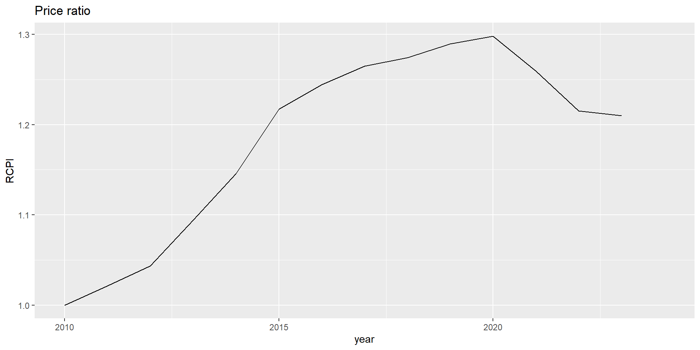
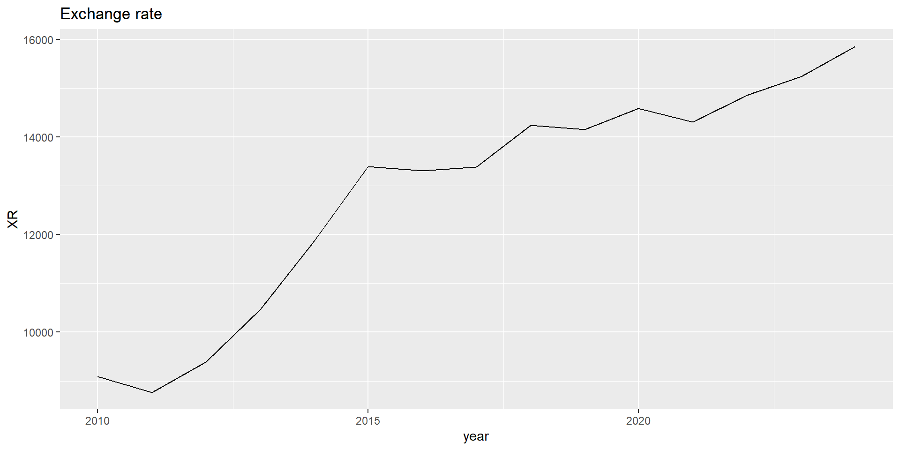

ECES905205 pertemuan 3
2024-09-12
We set out long-run relationships between money, prices and exchange rates.
Two parts of development:
Purchasing power, linking exchange rate and prices in different countries.
Linking price levels and monetary conditions in each countries.
Combination of the two: the monetary approach to exchange rates.
Since goods can be traded, arbitrage can happen, thus prices can converge in the international market.
Applied to a single good, we call this “law of one price” (LOOP).
Applied to a basket of goods, we call this “purchasing power parity”.
We start by assuming a frictionless trade (no trade cost).
With competitive market, flexible prices and zero trade cost, prices of identical goods sold in different countries should be the same.
For a good \(g\) sold in 2 places:
\[ q^g_{ID/US}=E_{Rp/\$}\frac{P^g_{US}}{P^g_{ID}} \]
Where \(q^g_{ID/US}\) is the relative price of good \(g\) in Indonesia vs the US. Loop is hold if \(q^g_{ID/US}=1\).
If LOOP is hold, we can rearrange the equation above to get:
\[ E_{Rp/\$}P_{US}^{ID}=P^g_{US} \]
which means the exchange rate must be equal to the ratio of prices expressed in two currencies.
\[ E_{Rp/\$}=\frac{P_{ID}}{P_{US}} \]
\[ q_{ID/US}=E_{Rp/\$}\frac{P_{US}}{P_{ID}} \]
If there are no arbitrage, then the same basket of goods in two countries should have the same price. i.e.,\(q_{ID/US}=1\)
PPP thus holds: price levels in two countries are equal when expressed in common currency. This is called absolute PPP.
The real exchange rate is the relative price of the baskets.
The Indonesian real exchange rate \(q_{ID/US}=E_{Rp/\$}P_{US}/P_{ID}\) tells us how many Indonesian baskets are needed to purchase U.S. basket.
The exchange rate for currencies is a nominal concept. The real exchange rate is the real concept.
The apreciation and depreciation terminology is the same, but add real: real appreciation (if \(q \downarrow\)) and real depreciation (if \(q \uparrow\)).
PPP is holding if \(q_{ID/US}=1\), and no incentive to do arbitrage.
If \(q_{ID/US}>1\), then the Indonesian basket is more expensive than the U.S. basket. This means the Rp is overvalued.
if \(q_{ID/US}<1\), then the Indonesian basket is cheaper than the U.S. basket. This means the Rp is undervalued.
\[\begin{equation} \underbrace{E_{Rp/\$}}_{\text{exchange rate}}=\underbrace{P_{ID}/P_{US}}_\text{ratio of price levels} \end{equation}\]
Purchasing power parity implies that the exchange rate at which two currencies trade equals the relative price levels of the two countries.
We have established that \(E_{Rp/\$}=P_{ID}/P_{US}\)
Left-hand side: Let’s take a rate of change of the exchange rate (i.e., rate of depreciation/appreciation).
\[\begin{equation} \frac{\Delta E_{Rp/\$}}{E_{Rp/\$}}=\frac{\Delta P_{ID}}{P_{ID}}-\frac{\Delta P_{US}}{P_{US}} \end{equation}\]
Right-hand side: We do the same, taking growth rate of the price ratio:
\[\begin{align*} \frac{\Delta (P_{ID}/P_{US})}{P_{ID}/P_{US}}&=\frac{\Delta P_{ID,t}}{P_{ID,t}}-\frac{\Delta P_{US,t}}{P_{US,t}} \\ &=\left(\frac{P_{ID,t+1}-P_{ID,t}}{P_{ID,t}}\right)-\left(\frac{P_{US,t+1}-P_{US,t}}{P_{US,t}}\right) \\ &=\pi_{ID,t}-\pi_{US,t}\\ \end{align*}\]
\[\begin{equation} \frac{\Delta E_{Rp/\$,t}}{E_{Rp/\$,t}}=\pi_{ID,t}-\pi_{US,t} \end{equation}\]
This is what we call relative PPP, which implies that the rate of depreciation of the nominal exchange rate equals the difference between the inflation rates of two countries.
The diagonal line expresses rate of depreciation against USD to be equal with inflation differential against US inflation. Not all align perfectly with the line, but shows a long-run tendecy of both to be very close
Likewise, US/UK exchange rate versus relative price. The two has tendency to move the same direction and to be equal. Not precisely all the time but shows a tendency towards equality.
What do you think about Indonesia?


Research shows that price differences—the deviations from PPP—can be quite persistent.
Estimates suggest that these deviations may die out at a rate of about 15% per year. This kind of measure is often called a speed of convergence.
Approximately half of any PPP deviation still remains after four years: Economists refer to this as a four-year half-life.
Such estimates provide a rule of thumb that is useful as a guide to forecasting real exchange rates.
\[\begin{equation} \frac{\Delta E_{Rp/\$,t}}{E_{Rp/\$,t}}=\frac{\Delta q_{Rp/\$,t}}{q_{Rp/\$,t}}+\pi_{ID,t}-\pi_{US,t} \end{equation}\]
Transaction cost, like cost of transportaton, tariffs and nnon-tariffs, other shipping cost and delays amid red tape. On average, these costs are about 20% of the goods’ price.
Non-traded goods. Some goods are just non-traded. We can think of it as infinitely high transaction cost. Most goods are falling between perfectly tradable and non-tradable.
Price stickiness. Prices are sticky, and it takes time for prices to adjust. This is especially true for services, which are more difficult to trade.
Imperfect competition. Firms may have market power, and thus can charge different prices in different markets.
For more than 25 years, The Economist newspaper has engaged in a whimsical attempt to judge PPP theory based on a well-known, globally uniform consumer good: the McDonald’s Big Mac. The over- or undervaluation of a currency against the U.S. dollar is gauged by comparing the relative prices of a burger in a common currency, and expressing the difference as a percentage deviation from one:
\[\begin{equation} \text{Big Mac Index}=q^{\text{Big Mac}}-1=\left(\frac{E_{\$/lc}P^{Bigmac}_local}{P_{US}^{Bigmac}}\right)-1 \end{equation}\]
Exchange rates determined by price ratio of two countries, but what determines those prices?
Monetary theory: in the long run, price levels are determined in each country by the relative demand and supply of money.
Stuff that serves these 3 functions:
Money is a store of value because it can be used to buy goods and services in the future. If the opportunity cost of holding money is low, we will hold money more willingly than we hold other assets.
Money also gives us a unit of account in which all prices in the economy are quoted.
Money is a medium of exchange that allows us to buy and sell goods and services without the need to engage in inefficient barter.
\[\begin{equation} M^d=\bar{L}PY \end{equation}\]
Real money demand thus:
\[\begin{equation} \frac{M^d}{P}=\bar{L}Y \end{equation}\]
In the equilibrium, money demand = money supply \(M_d=M\). M is exogenous because we assume it’s fully controlled by the central bank.
Therefore, \(M=\bar{L}PY\), which means in the equilibrium:
\[\begin{equation} \frac{M}{P}=\bar{L}Y \end{equation}\]
\[\begin{equation} P_{ID}=\frac{M_{ID}}{\bar{L}Y_{ID}} \quad \text{and} \quad P_{US}=\frac{M_{US}}{\bar{L}Y_{US}} \end{equation}\]
These twoequationns are examples of the fundamental equation of the monetary model of the price level.
In the long run, we assume prices are flexible and will adjust to put the money market in equilibrium.
We use our absolute PPP to solve for the exchange rate:
\[\begin{align*} E_{Rp/\$}&=\frac{P_{ID}}{P_{US}}=\frac{\left(\frac{M_{ID}}{\bar{L}_{ID}Y_{ID}}\right)}{\left(\frac{M_{US}}{\bar{L}_{US}Y_{US}}\right)} \\ E_{Rp/\$}&=\frac{M_{ID}/M_{US}}{\bar{L}_{ID}Y_{ID}/\bar{L}_{US}Y_{US}} \end{align*}\]
This is the fundamental equation of the monetary approach to exchange rates.
\[\begin{equation} E_{Rp/\$}=\frac{P_{ID}}{P_{US}}\frac{M_{ID}/M_{US}}{\bar{L}_{ID}Y_{ID}/\bar{L}_{US}Y_{US}} \end{equation}\]
Say ID’s money supply goes up, all else equal. The right handside equation increases, thus ID’s price goes up relative to the US, thus E goes up (IDR depreciate against USD)
Suppose ID real income goes up, IDR will appreciate. Can you explain why?
We use similar approach as befre using growth, where growth of money supply and real income are expressed as follows:
\[\begin{align*} \mu_{ID,t}&=\frac{M_{ID,t+1}-M_{ID,t}}{M_{ID}} \\ g_{ID,t}&=\frac{Y_{ID,t+1}-Y_{ID,t}}{Y_{ID}} \end{align*}\]
Therefore, the growth rate of \(P_{ID}=M_{ID}/\bar{L}_{ID}Y_{ID}\) equals the money supply growth rate \(\mu_{ID}\) minus the real income growth rate \(g_{ID}\) (\(\bar{L}\) is gone. why?)
Growth rate of \(P_{i}\) is an inflation rate \(\pi_{i}\), we get:
\[\begin{align*} \text{in ID:} \pi_{ID,t}&=\mu_{ID,t}-g_{ID,t} \\ \text{in US:} \pi_{US,t}&=\mu_{US,t}-g_{US,t} \end{align*}\]
When money growth is higher than income growth, we have “more money chasing fewer goods” and this leads to inflation.
Combining the two, we get:
\[\begin{align*} \frac{\Delta E_{Rp/\$,t}}{E_{Rp/\$,t}}&=\pi_{ID,t}-\pi_{US,t} \\ &= (\mu_{ID,t}-g_{ID,t})-(\mu_{US,t}-g_{US,t}) \\ \end{align*}\]
XR depreciation reflects a differece of two countries’ money growth and growth rate.
\[\begin{align*} \frac{\Delta E_{Rp/\$,t}}{E_{Rp/\$,t}}&=\pi_{ID,t}-\pi_{US,t} \\ &= (\mu_{ID,t}-g_{ID,t})-(\mu_{US,t}-g_{US,t}) \\ \end{align*}\]
If ID runs a looser monetary policy in the long run, measured by a faster money growth rate, the Rupiah will depreciate more rapidly, ceteris paribus.
Using this model, we ask what path would exchange rate follows from now on if prices were flexible and PPP held?
Assume ID and US real income growth rates are identical and equal to zero (0%). Also, US price level is constant with zero inflation.
2 cases: (1) a one-time increase in the money supply, and (2) an increase in the rate of money growth.
There is a 10% increase in the money supply M.
Real money balances M/P remain constant because real income is constant.
These previous two statements imply that price level P and money supply M must move in the same proportion, so there is a 10% increase in the price level P.
PPP implies that the exchange rate E and price level P must move in the same proportion, so there is a 10% increase in the exchange rate E.
At time T the Indonesia will raise the rate of money supply growth to rate of μ + Δμ from a steady fixed rate μ.
Money supply M is growing at a constant rate.
Real money balances M/P remain constant, as before.
These previous two statements imply that price level P and money supply M must move in the same proportion, so P is always a constant multiple of M.
PPP implies that the exchange rate E and price level P must move in the same proportion, so E is always a constant multiple of P (and hence of M).
It shows the relationship between rate of inflation rate and money growth differential relative to the US. The line reflects equality. Not exactly the same but very close.
It shows the relationship between rate of exchange rate depreciation and money growth differential relative to the US. The line reflects equality. Not exactly the same but very close.
The monetary approach assumes long-run PPP, which generally works poorly in the short run. There is one notable exception to this general failure of PPP in the short run: hyperinflation.
Economists traditionally define a hyperinflation as a sustained inflation of more than 50% per month (which means that prices are doubling every 51 days).
In common usage, some lower-inflation episodes are also called hyperinflations. An inflation rate of 1,000% per year is a common rule of thumb (22% per month).
Hyperinflations usually occur when governments face a budget crisis, are unable to borrow to finance a deficit, and instead choose to print money.
By 2007 Zimbabwe was almost at an economic standstill, except for the printing presses churning out the banknotes. - A creeping inflation—58% in 1999, 132% in 2001, 385% in 2003, and 586% in 2005—was about to become hyperinflation, and the long-suffering people faced an accelerating descent into even deeper chaos. - By 2007 inflation had risen to 12,000%! - This was one the five worst hyperinflations of all time. - In 2008, the local currency disappeared from use, replaced by U.S. dollars and South African rand.
Currencies can become extinct if they cease to function well and lose value rapidly (e.g., dollarization in Ecuador). If the currency survives, the government may redenominate a new currency unit equal to 10N (10 to the power N) old units. Sometimes N can get quite large….
We assume a stable demand of money, and it’s not necessarily true.
We will now explore a more general model that allows for money demand to vary with the nominal interest rate.
We consider the links between inflation and the nominal interest rate in an open economy.
We then return to the question of how best to understand what determines exchange rates in the long run.
Suppose the demand for money depends on interest rate: high interest rate makes holding money expensive. This makes \(\bar{L}\) no longer constant.
L is a decreasing function of the nominal interest rate \(i\)
\[\begin{equation} M^d=L(i_{Rp})PY \rightarrow \frac{M^d}{P}=L(i_{Rp})Y \end{equation}\]
The higher innterest rate, the lower money demand is. An increase in real income will shifts the curve to the right
Money market long-run equilibrium (\(M=M^d\))
With this relationship and PPP and UIP holds, we can derive the long-run exchange rate depretiation.
\[\begin{equation} \frac{\Delta E^e_{Rp/\$,t}}{E_{Rp/\$,t}}=\pi^e_{ID,t}-\pi^e_{US,t} \ \text{and} \ \frac{\Delta E^e_{Rp/\$,t}}{E_{Rp/\$,t}}=i_{Rp,t}-i_{US,t} \end{equation}\]
Therefore, we have that inflation expectation difference is equal to nominal interest rate difference.
\[\begin{equation} \pi^e_{ID,t}-\pi^e_{US,t} = i_{Rp,t}-i_{US,t} \end{equation}\]
All else equal, a rise in the expected inflation rate in a country will lead to an equal rise in its nominal interest rate. This is called the fisher effect.
Fisher effect predicts that the change in the opportunity cost of money is equal not just to the change in the nominal interest rate but also to the change in the inflation rate.
\[\begin{equation} i_{Rp,t}-\pi^e_{ID,t} = i_{US,t}-\pi^e_{US,t} \end{equation}\]
\[\begin{equation} r^e_{ID}=r^e_{US} \end{equation}\]
The condition is called real interest parity:
If PPP and UIP hold, then nexpected real interest rates are equalized across countries
Real interest parity implies that arbitrage in goods (PPP) and financial markets (UIP) alone in sufficient, in the long run, to cause the equalization of real interest rates across countries.
Thus, \(r^e_{ID}=r^e_{US}=r^*\)
We treat \(r^*\) as an exogeneous variable, something no policy maker in any country can control.
Unnder this condition, the Fisher effect is even clearer because by definition
\[\begin{align*} i_{Rp}=r^e_{ID}+\pi^e_{ID} = r^*+\pi^e_{ID} \\ i_{\$}=r^e_{US}+\pi^e_{US} = r^*+\pi^e_{US} \end{align*}\]
Now that money demand moves negatively with interest rate, we can express exchange rate as:
\[\begin{equation} E_{Rp/\$}=\frac{P_{ID}}{P_{US}}\frac{M_{ID}/M_{US}}{L_{ID}(i_{Rp})Y_{ID}/L_{US}(i_\$)Y_{US}} \end{equation}\]
Let’s reexamine case 2 where Indonesia rises money growth rate from \(\mu\) to \(\mu+\Delta\mu\).
At time T the Indonesia will raise the rate of money supply growth to rate of μ + Δμ from a steady fixed rate μ.
Money supply M is growing at a constant rate.
Real money balances M/P remain constant, as before.
These previous two statements imply that price level P and money supply M must move in the same proportion, so P is always a constant multiple of M.
Fisher effect suggests that inflation leads to a same proportion changes of interest rate.
Real money demand thus falls with a discrete jump at time \(T\)
An overarching aspect of a nation’s economic policy is the desire to keep inflation within certain bounds.
To achieve such an objective requires that policy makers be subject to some kind of constraint in the long run. Such constraints are called nominal anchors.
Long-run nominal anchoring and short-run flexibility are the characteristics of the policy framework that economists call the monetary regime.
The three main nominal anchor choices that emerge are exchange rate target, money supply target, and inflation target plus interest rate policy.
We relabel Indonesia as Home (H) and US as Foreign (F)
\[\begin{equation} \pi_H=\underbrace{\frac{\Delta E_{H/F}}{E_{H/F}}}_{text{anchor variable}}+\pi_F \end{equation}\]
Relative PPP says that home inflation equals the rate of depreciation plus foreign inflation. A simple rule would be to set the rate of depreciation equal to a constant.
\[\begin{equation} \pi_H=\mu_H+\g_H \end{equation}\]
Simple rule in this case is to set a growth rate of money supply equal to a constant, say 2% a year.
The drawback is the final term in the previous equation: real income growth can be unstable. In periods of high growth, inflation will be below the desired level. In periods of low growth, inflation will be above the desired level.
combined with interest rate policy as its anchor variable:
\[\begin{equation} \pi^e_H=i_H+r^* \end{equation}\]
Fisher effect says home inflation is the home nomninal interest rate minus world interest rate. If the latter is constant and the average home nominal interest rate is stable, inflation can be kept stable. But the target nominnal rate must be adjusted if the world real interest rate changes, as recently happend.
This table illustrates the possible exchange rate regimes that are consistent with various types of nominal anchors. Countries that are dollarized or in a currency union have a “superfixed” exchange rate target. Pegs, bands, and crawls also target the exchange rate. Managed floats have no preset path for the exchange rate, which allows other targets to be employed. Countries that float freely or independently are judged to pay no serious attention to exchange rate targets; if they have anchors, they will involve monetary targets or inflation targets with an interest rate policy. The countries with “freely falling” exchange rates have no serious target and have high rates of inflation and depreciation
An appreciation of the importance of nominal anchors has transformed monetary policy making and inflation performance throughout the global economy in recent decades.
In the 1970s and 1980s, most of the world was struggling with high inflation.
In the 1990s, policies designed to create effective nominal anchors were put in place in many countries.
Most of those policies have turned out to be credible, too, thanks to political developments in many countries that have fostered central-bank independence.